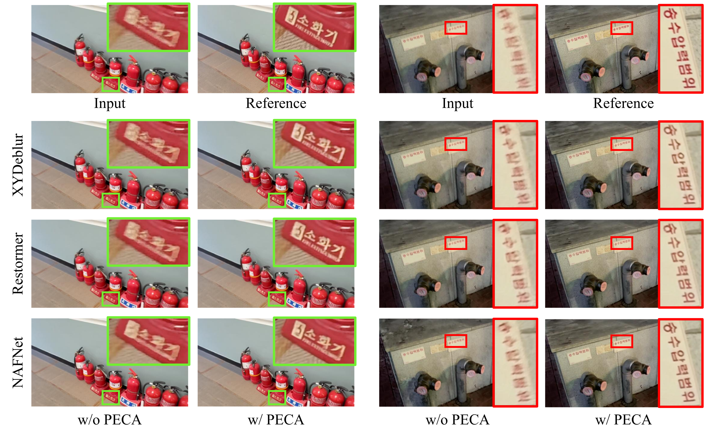

Physical bound
Derive the maximum disparity from focal length, baseline, and minimum focus distance.
Modern smartphones pair camera modules with very different optics and stabilization. The primary wide camera often produces a sharp view, while the ultra-wide camera—typically without optical image stabilization—suffers stronger motion blur. Existing stereo benchmarks largely assume two homogeneous cameras and do not capture this asymmetric degradation.
We introduce the Heterogeneous Stereo Deblurring (HSD) dataset and PECA, a lightweight, architecture-agnostic cross-view fusion module. PECA limits correspondence search to a directional epipolar window bounded by camera optics, retrieves reliable details from the sharp reference, and falls back to self-deblurring where correspondence is uncertain.
HSD is built from synchronized, device-rectified wide and ultra-wide smartphone videos. Temporal integration simulates exposure-induced ultra-wide blur while the center frame provides the sharp target.
Rectification reduces correspondence to one epipolar line. Camera optics provide a maximum physically feasible disparity. PECA combines both constraints to remove impossible candidates before attention is computed.
Derive the maximum disparity from focal length, baseline, and minimum focus distance.
Restrict keys and values to a directional 1D window along the rectified scanline.
Inject reference detail according to matching confidence while preserving target-view features.
PECA improves CNN-, Transformer-, and NAFNet-based models on HSD, with only 4.8G module MACs and 83.1K parameters in the controlled fusion comparison.


@inproceedings{shin2026peca,
title = {A Benchmark for Heterogeneous Stereo Deblurring with
Physically- and Epipolar-constrained Cross Attention},
author = {Shin, Hoju and Kim, Jiah and Kim, Seung-Wook and Ji, Seowon},
booktitle = {European Conference on Computer Vision (ECCV)},
year = {2026}
}